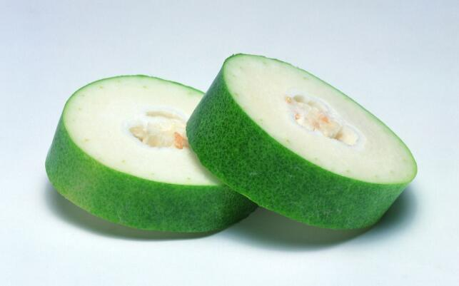

揭秘：探求冬瓜背后的文化力量
（一）何以为“冬”
冬瓜，寻常瓜果蔬菜之一，我国南北两地皆有种植。老少皆宜，无论是清炒还是搭配其他食材炖煮，味道都非常鲜美。

生活在农村的小伙伴都知道，冬瓜有“夏瓜”的称号，它在夏天成熟、采摘食用。这时候有的小伙伴可能就有疑问，那为什么要取名叫冬瓜呢？
追根溯源我们可以发现，冬瓜原产于我国南方以及东印度等地，我国已经有2000多年的种植历史。查阅相关文献，可以发现在秦朝以前还没有专门记载冬瓜的文献资料。到后来的《广雅》才能寻得冬瓜的踪迹，里面有这样一段对冬瓜的描述“冬瓜经霜后，皮上白如粉涂，其子亦白，故名白冬瓜。”意思是说，冬瓜成熟之后，身上会披上一层白霜，与冬日白雪落在上面相似，顾名为冬瓜。确实，夏日炎炎，冬瓜外表的白霜给人以清冷的示意，想想也是十分贴切的。宋代诗人郑清之还以此为题材，写了《冬瓜》诗一首。“剪剪黄花秋后香，霜皮露夜护身长，生来笼统君莫笑，腹内能容数百人。”非常生动形象地写出了冬瓜的特色之处，也反映出作者“宰相肚子能乘船”的度量。
关于冬瓜的名称还有这么一个神话故事，传说神农氏爱民如子，为了造福人民培育出了“四方瓜”东瓜、南瓜、西瓜、北瓜，命令它们各奔至他所封的地方安家落户管理乡民。可是，南、西、北瓜都按照神农的指示各自去了受封的地方，只有东瓜不服神农的安排，说东边的海风大，它不适应生活。神农只好让东瓜换个地方。可是事情并没有想象中那么顺利，北方它嫌冷，南方又太热，西方风沙大，最后东瓜只能选择去东方。神农氏看到东瓜回心转意，便高兴道：“东瓜，东瓜，东方为家。”东瓜听完后立即说到：“是冬瓜不是东瓜，处处都是我的家。”神农氏听完后，哈哈大笑道：“冬天无瓜，你喜欢叫冬瓜。愿意四海为家，就叫冬瓜吧。”
如此富有神话色彩的故事，使得冬瓜的身上平添了几分神秘的韵味。
（二）你不知道的冬瓜历史小故事
“冬瓜”诗人张祜
冬瓜因为它的味美好栽种深受乡人喜爱，虽不能像大诗人一样吟诗一首，但也可以为自己的孩子取个小名为“冬瓜”。不仅是因为冬瓜生命力顽强，小孩子叫这个名字好养活，也是家长希望取名为冬瓜，孩子可以成长成冬瓜一样，茁壮、敦实。而唐朝大诗人张祜的小名就叫冬瓜，只因为母亲生他的时候，梦见过冬瓜。至此他与冬瓜有了不解的缘分。
张祜是个非常有才气的诗人，曾经写的《昭君怨》“故国三千里，深宫二十年。一声何满子，双泪落君前。”闻名于世，朝中伶人没有不会唱张祜的《昭君怨》。其中的“故国三千里，深宫二十年”更是得到白居易、杜牧的欣赏。但也因为他的才情和孤傲的性格，也受了一些诗人的排挤，里面就有非常有名的诗人元稹。张祜一生仕途不得意，甚至还被钱塘酒徒诗人朱冲和作诗《嘲张祜》讽刺，“白在东都元已薨，兰台凤阁少人登。冬瓜堰下逢张祜，牛屎堆边说我能。”
但张祜并没有对此耿耿于怀，反而寄情于乡间，让往事随风散去。晚年的他在安徽与河南的交界处定居下来，竹篱茅舍，自给自足，与好友下棋对弈，吟诗对唱。想想，对于“冬瓜堰下做一名小官”的嘲讽，张祜可能早已以冬瓜大肚能容的气量，对此一笑而过。
英雄气概的“冬瓜鱼”
胡宗宪是清朝时期著名的抗倭健将，在嘉靖三十三年，倭寇大肆攻略我国沿海乡镇，于是朝廷命胡宗宪到宁波抗倭御敌。胡宗宪机智聪明，使用策略击退敌人。他带领手下身穿百姓服装，深入敌区，将毒酒和大米装船航海，当遇到倭寇时就弃船而逃。贪得无厌的倭寇中了胡宗宪的计谋，误食毒食，死伤七百余人。
为了庆祝此次胜利，胡宗宪看见乡民送来的慰劳品有大量的冬瓜和鱼。于是他想起了小时候经常吃的冬瓜鱼，便叫士兵将冬瓜削皮切块作锅底，再将乡民送来的鱼洗净宰杀，然后将鱼块下锅和辅料一起翻炒上色，再加上适量火腿腊肉，最后铲起铺放于锅内。最后加入盖过鱼肉的清水，小火慢煮，一个小时之后便可以出锅品尝。鲜香扑鼻的鱼味和爽滑味美的冬瓜完美融合，让士兵美美的吃上一顿“百鱼宴”，体会胜利的滋味。从那以后，“冬瓜鱼”便闻名于世，广受大家的喜欢。
（三）附庸风雅 看古人如何写冬瓜
做人可以像菊，淡泊名利；可以像莲，出淤泥而不染；也可以像冬瓜，其貌不扬，却有丰富的内在。可惜的是，即使是在喜爱用诗歌来托物言志的古代，也很少见到咏冬瓜的诗和文章。能在以往古人所做的文章和诗词中见到冬瓜身影的，可能对冬瓜真的是“真爱”。
清代袁枚在他的《随园食单》写到，“其中可荤可素者，蘑菇、鲜笋、冬瓜是也。”“冬瓜之用最多。拌燕窝、鱼肉、鳗、鳝、火腿皆可。”寥寥数语就将冬瓜这个百搭的特点凸显出来。
而在清代褚人获编写的《坚瓠集》中记载着关于冬瓜美食的故事。北宋期间的张景寄情山水隐居不当官，一日宋仁宗召见他问道“卿在江陵地有何景？”张景答道：“两岸绿杨遮虎渡，一湾芳草护龙洲。” 宋仁宗又问：“所食何物？”张景答道：“粟米炊鱼子饭，嫩冬瓜煮鳖裙羹。”这道冬瓜菜流传至今，广受好评。
 上一篇
上一篇